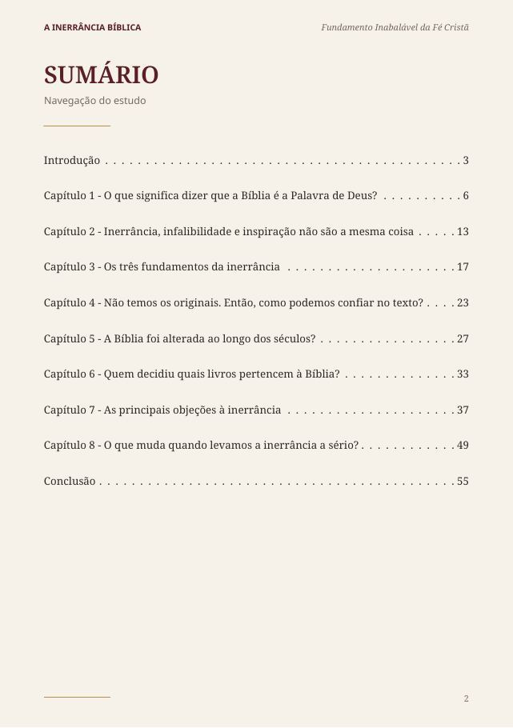
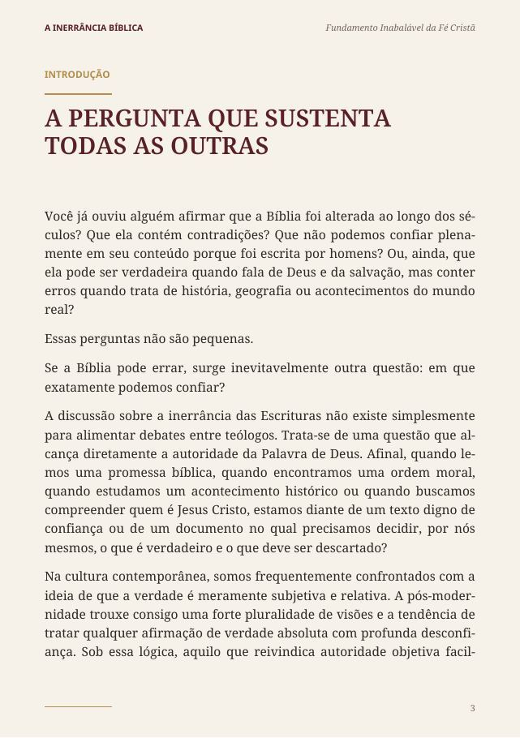
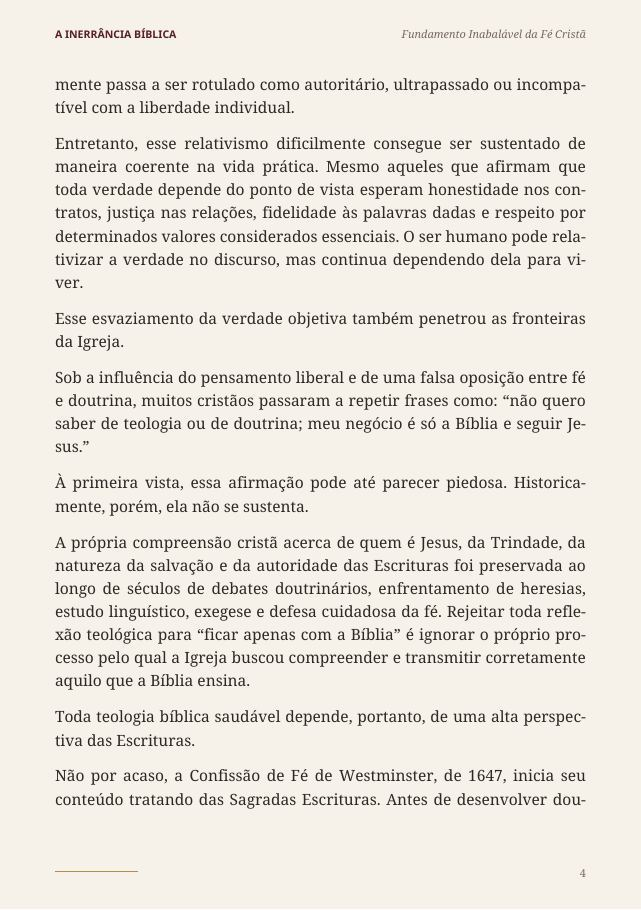
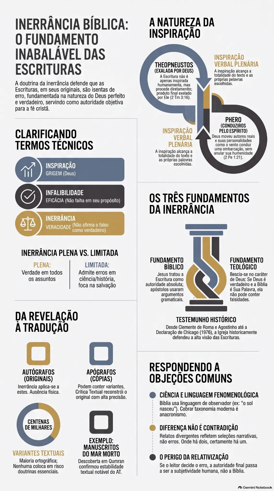
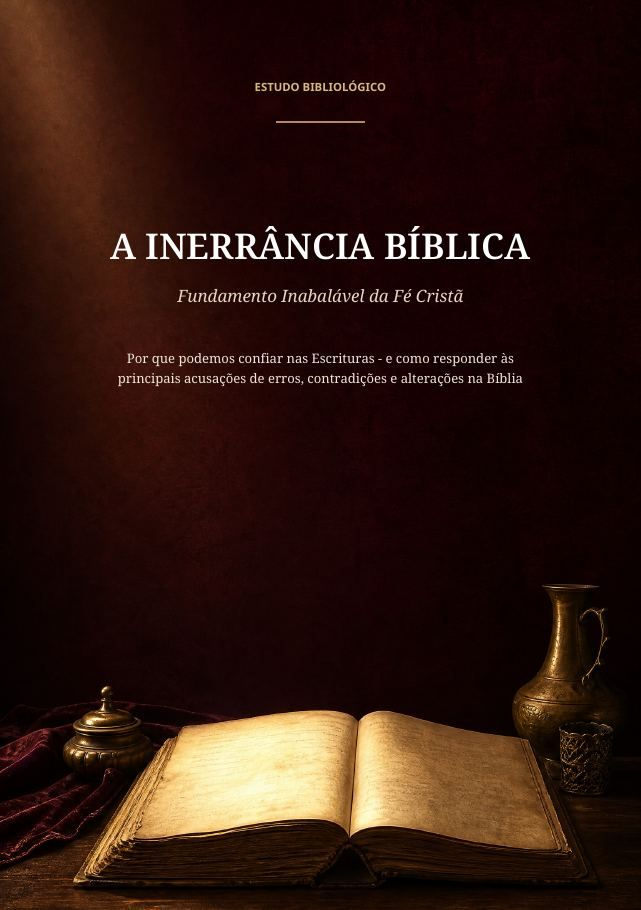

Conheça o material
Veja o que está incluído, de verdade
Um material pensado para ser lido, visualizado e consultado depois.
Um estudo completo sobre a doutrina da inerrância bíblica: seus fundamentos teológicos, sua base histórica e as respostas às objeções mais comuns, como manuscritos, variantes e aparentes contradições.
É fácil afirmar que a Bíblia não erra. Difícil é sustentar essa afirmação diante da primeira pergunta difícil.
Acesso imediato por e-mail · Garantia de 7 dias
Páginas e infográficos reais do material que você recebe




Uma aula em vídeo com o resumo do conteúdo do estudo, para revisar sem precisar reler tudo.
Bônus 1Pronta para levar o estudo a um grupo, célula ou classe, sem precisar montar nada do zero.
Bônus 2De R$ 161,60 por R$ 27,90 · Garantia de 7 dias
É fácil afirmar que a Bíblia é inerrante. Mais difícil é entender, com clareza, por que isso é verdade.
8 capítulos, do que significa dizer que a Bíblia é a Palavra de Deus até as principais objeções à inerrância.
Os 5 pontos centrais da doutrina, ilustrados, para visualizar o argumento de forma rápida.
Diferença entre inspiração, infalibilidade e inerrância, os três fundamentos da doutrina e respostas às objeções mais comuns.
Mais um recurso visual do estudo, para consulta rápida e revisão do conteúdo.
Aula em vídeo com o resumo do conteúdo do estudo.
Pronta para levar o estudo a um grupo, célula ou classe.

Pagamento único · sem assinatura
Um material pensado para ser lido, visualizado e consultado depois.
Acesso imediato após a confirmação do pagamento · Garantia de 7 dias
O conteúdo foi organizado a partir do estudo da doutrina da inerrância bíblica desde seus fundamentos teológicos, bíblicos e históricos, até as objeções mais recorrentes levantadas contra ela. O objetivo não foi produzir um material apologético defensivo, mas reunir, em um único lugar, texto, recursos visuais e vídeo de apoio, para que você entenda o que está afirmando quando diz que confia nas Escrituras.